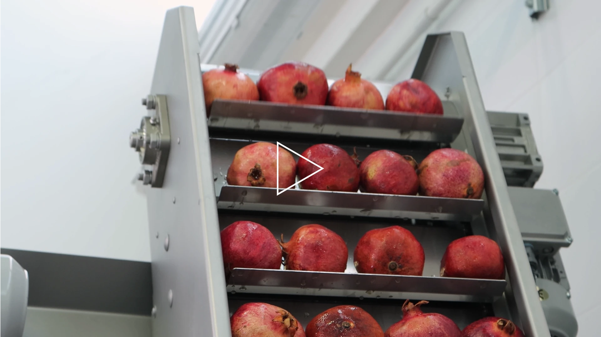
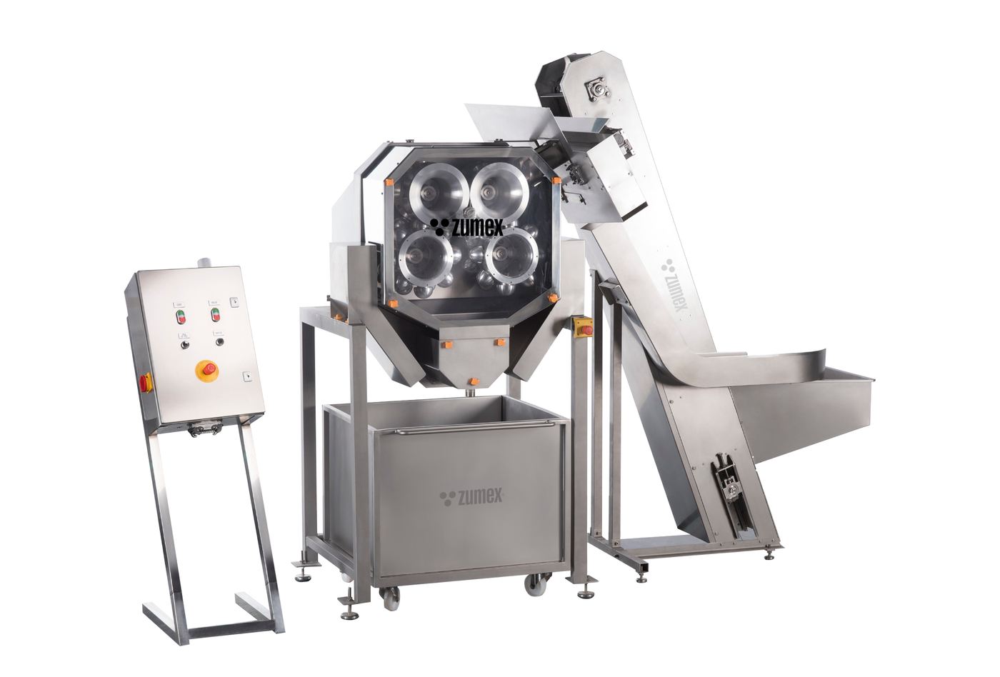
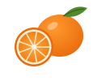
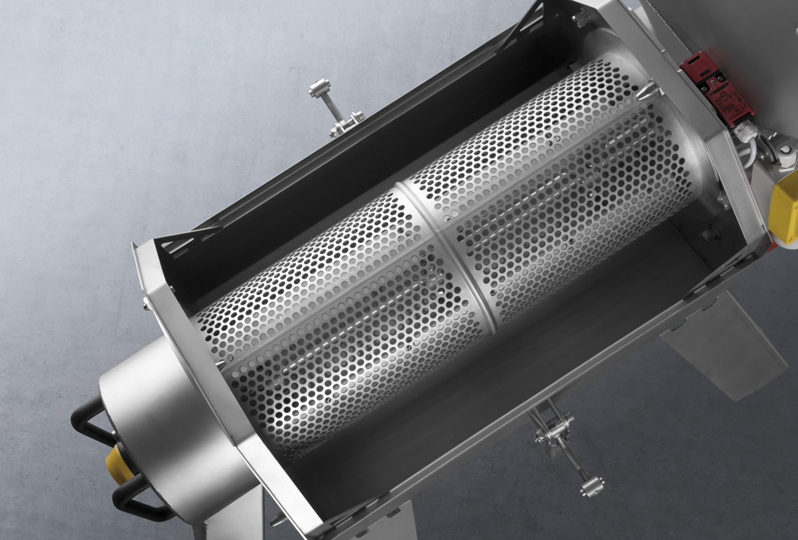
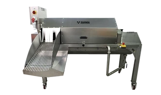

Z450 / Z450P
Průmyslové odšťavňování pro výrobní provozy. Z450 je určen pro citrusy, varianta Z450P pro granátová jablka.
Cenu a dostupnost vám potvrdíme podle konfigurace.
Co Z450 / Z450P umí
Z450 je průmyslový citrusový lis pro kontinuální zpracování větších objemů ovoce. Řada pokrývá výrobu od stovek litrů šťávy za hodinu; varianta Z450P je zaměřena na granátová jablka.
Nerezová konstrukce a možnost začlenění do linky podporují návaznost od podávání ovoce po další zpracování šťávy. Správná lisovací konfigurace se vybírá podle druhu a velikosti plodů i požadované kapacity.
Kontinuální zpracování velkého množství ovoce.
Volba podle typu vstupní suroviny.
Začlenění do kompletní výrobní linky.


Co Z450 / Z450P zpracuje
Průmyslový lis Citrus Z450 lisuje citrusy bez hořkosti a s minimem dužniny a esenciálních olejů. Zpracuje:
 Pomeranče
Pomeranče Citrony a limetky
Citrony a limetky
Mandarinky a klementinky Grapefruity
Grapefruity Granátová jablka (Z450P)
Granátová jablka (Z450P)Verze Z450P má speciální hlavu pro šťávu z granátových jablek bez drcení semen.
Varianty a provedení
Jedna řada, vaše konfigurace. Fotografie jsou ilustrační, výbava a parametry se mohou lišit podle varianty.
Z450
Uvedený rozsah se vztahuje k celé řadě a závisí na surovině a konfiguraci. Při návrhu ověříme výkon konkrétního modelu i napojení na předchozí a navazující zařízení.
Z450P Pomegranate
Uvedený rozsah se vztahuje k celé řadě a závisí na surovině a konfiguraci. Při návrhu ověříme výkon konkrétního modelu i napojení na předchozí a navazující zařízení.
Rozměry
Kolik místa Z450 / Z450P potřebuje.
Celá sestava
- Délka × výška × šířka2 560 × 1 250 × 2 270 mm
- Hmotnost730 kg
Lisovací hlava
- Rozměry1 100 × 1 300 × 2 010 mm
Plnicí elevátor
- Rozměry2 540 × 640 × 520 mm
Údaje výrobce. Přesné rozměry pro vaši konfiguraci rádi ověříme.
Technické parametry
- Rozsah produkce řady
- 450–1 580 l/h
- Rozsah zpracování ovoce
- 1 100–2 200 kg/h
- Materiál
- Nerezová ocel
- Příkon uváděný pro sestavu
- 2,1 kW
- Napájení
- 200–480 V, 50–60 Hz
- Hmotnost uváděné sestavy
- 730 kg
- Zaměření
- Citrusy / granátová jablka dle varianty
- Výkon
- Až 150 pomerančů/min
- Sady lisování
- XS, S, M, L (40–100 mm)
- Elevátor
- Až 40 kg ovoce ze zásobníku do lisu
- Rozměry sestavy (d × v × š)
- 2 560 × 1 250 × 2 270 mm
- Přípojky
- Elektřina
Údaje výrobce pro uvedené provedení. Výkon závisí na surovině a konfiguraci. Zdroj: Zumex
Co zvážit při výběru
Uvedený rozsah se vztahuje k celé řadě a závisí na surovině a konfiguraci. Při návrhu ověříme výkon konkrétního modelu i napojení na předchozí a navazující zařízení.
Technologie a výbava
Co uvnitř dělá rozdíl v chuti, hygieně i obsluze.
Modulární lisovací skupina
Sady XS, S, M a L podle velikosti ovoce.
Automatický elevátor
Plynulé podávání bez přerušení, rychlost podle velikosti ovoce.
Hlava pro granátová jablka
Speciální hlava a nože pro šťávu bez drcení semen (Z450P).
Dokumentace ke stažení
Prospekty, technické listy a návody výrobce.
Podobné produkty

ZBP
ZBP je kontinuální pásový lis pro průmyslové zpracování ovoce a zeleniny.
- ZBP 400, kapacita400 kg/h
- ZBP 700, kapacita700 kg/h

ZDS
ZDS je pulper určený k oddělování a využití dužiny v průmyslovém zpracování ovoce.
- ZDS 500, kapacita500 kg/h
- ZDS 1000, rozsah kapacity1 000–5 000 kg/h

ZWS
ZWS zajišťuje mytí ovoce a zeleniny před dalším průmyslovým zpracováním.
- TechnologieRotující buben a vnitřní kartáče
- MateriálNerezová ocel

ZWM
ZWM propojuje mytí, dopravu a drcení ovoce v jedné sestavě.
- ZWM 1500, kapacita1 500–2 000 kg/h
- ZWM 3000, kapacita3 000 kg/h
Chcete Z450 / Z450P do svého provozu?
Pošlete nám, kolik šťávy denně připravujete a kolik máte místa. Ozveme se s doporučenou konfigurací a cenou.